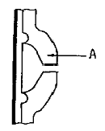
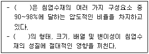
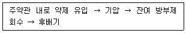

임산가공기사 (2013-09-28 기출문제)
1과목: 목재이학
1. 목재의 수축과 팽윤을 최소화 하는 실용적 방법으로 틀린 것은?
- 목재를 사용할 장소의 평형함수율에 알맞은 함수율까지 건조하여 가공하는 것이 필요하다.
- 섬유주향이 서로 직교하도록 만들어진 재료를 사용하면 수축과 팽윤을 증가시켜 가능하면 사용하지 않는다.
- 강도를 유지할 수 있는 범위 내에서 가능한 한 비중이 작고 가벼운 나무를 사용하는 것이 좋다.
- 판목판재보다는 정목판재를 사용하는 것이 효과적이다.
(정답률: 75%)

2. 시험재(sample board)의 건조전 함수율이 40%, 무게가 420g이었다. 어떤 건조시간에 시험재의 무게가 350g 이 되었다면 이때에 시험재의 함수율은?
- 약 12%
- 약 17%
- 약 22%
- 약 27%
(정답률: 67%)
3. 목재의 비저항(比抵抗)에 대한 설명으로 틀린 것은?
- 목재의 비저항은 함수율이 높아짐에 따라 적어진다.
- 목재의 비저항은 온도상승에 따라 감소한다.
- 횡단면의 비저항은 섬유방향의 비저항보다 크다.
- 목재의 비저항은 수종에 따라 그 차이가 크다.
(정답률: 53%)
4. 목재의 수축률 표시방법이 아닌 것은?
- 전수축률
- 함수율 1% 변화에 따른 수축률
- 생재상태에서 기건상태까지의 수축률
- 생재상태에서 섬유포화점 이상까지의 수축률
(정답률: 80%)
5. 목재의 수축과 팽윤에 대한 설명으로 틀린 것은?
- 목재가 수축 또는 팽윤 될 때에 세포내강의 용적도 함께 비례하여 변한다.
- 목재의 수축과 팽윤은 길이방향, 방사방향 및 접선방향에 따라서 차이를 나타낸다.
- 정상적인 수축과 팽윤은 섬유포화점 이하의 함수율에서 결합수의 감소 또는 증가에 따라서 발생한다.
- 찌그러짐과 같이 수축 이방성에 따른 건조결함은 섬유포화점 이상의 높은 함수율에서도 발생한다.
(정답률: 49%)
6. 목재 함수율을 측정하는 원리와 측정법의 연결이 잘못된 것은?
- 목재 중의 수분을 분리하는 방법 – 전건법(全乾法)
- 목재 중의 수분을 분리하는 방법 – 추출법(抽出法)
- 목재 내의 상대습도를 측정하는 방법 – 습도법(濕度法)
- 목재 내의 상대습도를 측정하는 방법 – 전기식 수분계(電氣式 水分計)
(정답률: 46%)
7. 목재의 방향에 의한 열팽창 크기의 순서로 옳은 것은? (단, awℓ : 섬유방향, awr : 방사방향, awt : 접선방향)
- awt ＞ awr ＞ awℓ
- awt ＞ awℓ ＞ awr
- awr ＞ awt ＞ awℓ
- awℓ ＞ awt ＞awr
(정답률: 64%)
8. 목재의 섬유포화점에 대한 설명으로 틀린 것은?(문제 오류로 확정답안 발표시 1,4번이 정답처리 되었습니다. 여기서는 1번을 누르시면 정답 처리 됩니다.)
- 섬유포화점 이상에서 목재 강도는 증가한다.
- 세포벽은 포화되어 있으나, 자유수는 공극에 존재하지 않을 때 함수율이다.
- 섬유포화점 이하에서는 함수율이 감소함에 따라 목재는 수축한다.
- 일반적인 함수율은 30~45% 범위이다.
(정답률: 75%)
9. 컨디셔닝(conditioning)의 처리시간과 가장 관계가 적은 것은?
- 수종
- 재목의 두께
- 함수율
- 열전도
(정답률: 52%)
10. 목재의 기본밀도(basic density)를 구하는 올바른 방법은?
- 생재질량 / 기건부피
- 기건질량 / 기건부피
- 전건질량 / 생재부피
- 임의의 함수율에서의 질량 / 생재부피
(정답률: 60%)
11. 건조할 때 세포내강과 간극에 존재하여 가장 먼저 제거되는 수분은?
- 결합수
- 응축수
- 구조수
- 자유수
(정답률: 79%)
12. 목재의 진비중은 실질 용적의 측정에 사용하는 치환매체의 종류에 따라 달라지는데 헬륨가스 사용시의 진비중의 값은?
- 1.30
- 1.46
- 1.60
- 1.70
(정답률: 75%)
13. 목리방향(αt : αr : αl)간 수축율의 비로 가장 적합한 것은? (단, αt : 접선방향, αr : 방사방향, αl : 섬유방향)
- 100 : 60 : 4
- 100 : 50 : 3
- 10 : 5 : 4
- 10 : 5 : 3
(정답률: 69%)
14. 온도 50℃일때의 전건재의 비열(cal/g·℃)은 얼마인가?
- 0.224 cal/g·℃
- 0.324 cal/g·℃
- 0.524 cal/g·℃
- 1.000 cal/g·℃
(정답률: 62%)
15. 어떤 목재의 접선방향의 전팽창율이 10%라면 이 목재의 접선방향 전수축률은?
- 약 9.1%
- 약 12.1%
- 약 14.1%
- 약 16.1%
(정답률: 45%)
16. 목재 음의 손실감쇠(damping of internal friction)를 나타내는 감쇠율(damping ratio)에 관한 설명으로 틀린 것은?
- 목재세포의 크기 및 배열을 고려할 때 목재의 감쇠율은 대부분의 다른 재료에 비해 큰 편이다.
- 섬유포화점 이하에서 함수율이 상승할수록 목재의 감쇠비는 온도에 관계없이 상승한다.
- 횡진동에서의 대수감쇠율은 비틀림진동에서의 대수 감쇠율보다 일반적으로 작다.
- 진동의 위험이 있는 경우, 다른 강도적 성질이 충죽된다면 고손실감쇠능의 재료를 사용해야 한다.
(정답률: 64%)
17. 목재의 평형함수율과 온도의 관계에 대한 설명으로 맞는 것은?
- 온도가 증가됨에 따르 목재의 평형 함수율은 감소한다.
- 온도의 증가는 추출물의 흡수성을 증가시키지만, 목재의 평형 함수율에 미치는 영향은 없다.
- 온도의 증가는 섬유포화점 증가에 의해 목재의 평형함수율은 증가한다.
- 온도의 증가는 목재의 흡수성과 무관하다.
(정답률: 49%)
18. 3,000g의 목재를 온도 20℃에서 80℃까지 올리는데 필요한 열량은? (단, 이 목재의 비열은 0.2665 ca/g·℃ 이다.)
- 15,990 cal
- 47,970 cal
- 79,950 cal
- 91,280 cal
(정답률: 63%)
19. 목재의 탄성적 성질에 영향을 주는 인자에 대한 설명으로 틀린 것은?
- 탈리그닌화된 목섬유와 같이 리그닌이 없는 식물체는 강성(剛性)이 작다.
- 방사조직이 많은 목재일수록 방사방향이 탄성계수가 크다.
- 옹이의 주위에 뒤틀린 목리(distorted grain)가 형성되면 강성(剛性)은 감소된다.
- 목재의 비중이 커지면, 외력에 대한 저항이 증가되므로 파괴응력은 증가되고 탄성은 떨어진다.
(정답률: 67%)
20. 회복 불가능한 크리프를 의미하는 것은?
- 이차 크리프(secondary creep)
- 일차 크리프(Primary creep)
- 크리프 변형계수(creep compliance)
- 비교 크리프(relative creep)
(정답률: 67%)
2과목: 목재해부학
21. 다음 유연벽공의 구조 그림에서 A부분의 명칭은?

- 벽공환(pit annulus)
- 벽공강(pit cavity)
- 벽공연(pit border)
- 벽공구(pit canal)
(정답률: 79%)
22. 접선단면에서 볼 때 다열방사조직의 가장자리에 내부의 평복세포를 직립세포가 둘러싸고 있을 때 이 세포집단을 무엇이라 하는가?
- 타일세포
- 분비세포
- 초상세포
- 거대세포
(정답률: 36%)
23. 분포형식에 의한 방사조직의 분류 중 활엽수의 접선단면에서 비교적 짧고 작은 방사조직이 모여 마치 한 개의 큰 방사조직처럼 보이는 것은?
- 확산방사조직(diffuse ray)
- 복합방사조직(compound ray)
- 연합방사조직(combination ray)
- 집합방사조직(aggregate ray)
(정답률: 57%)
24. 주피(周皮)를 구성하는 3가지 조직으로 맞는 것은?
- 코르크형성층, 코르크조직, 코르크피층
- 코르크목부, 코르크사부, 코르크피층
- 코르크형성층, 코르크사부, 코르크피층
- 코르크조직, 사부시원세포, 코르크형성층
(정답률: 60%)
25. 천공판(perforation plate)이 특별히 발달되어 있는 세포는?
- 도관
- 가도관
- 목섬유
- 방사조직
(정답률: 49%)
26. 정상수지구를 지니지 않는 수종은?
- 잎갈나무
- 소나무
- 잣나무
- 삼나무
(정답률: 29%)
27. 형성층의 원주 증대를 하기 위한 방추형시원세포의 분열방식으로 맞는 것은?
- 병층분열
- 횡분열
- 수층분열
- 접선분열
(정답률: 44%)
28. 비대생장을 시작한 2차사부와 2차목부의 조직에 있어 수간의 내부로부터 외부로 향한 배열순서가 맞는 것은?
- 2차목부 – 형성층 - 1차사부
- 1차목부 – 형성층 - 2차사부
- 2차목부 – 형성층 - 2차사부
- 1차목부 – 형성층 – 1차사부
(정답률: 49%)
29. 활엽수재에서 나타나는 방사조직이나 축방향의 목재구성세포가 층계상으로 배열함으로써 나타나는 무늬는?
- 교착목리
- 은문양
- 리플마크
- 조안문양
(정답률: 61%)
30. 나선비후가 관찰되는 수종은?
- 주목
- 소나무
- 향나무
- 오리나무
(정답률: 43%)
31. 수목의 비대 생장에 관계하는 조직은?
- 전분열조직
- 생장점
- 정단분열조직
- 유관속형성층
(정답률: 47%)
32. 수축(樹軸)에 대하여 경사된 목리가 아닌 것은?
- 선회목리(spiral grain)
- 사주목리(diagonal grain)
- 교착목리(inter locked grain)
- 수심목리(pith grain)
(정답률: 64%)
33. 세포벽 층에서 일반적으로 가장 두꺼운 층은?
- 일차벽(P)
- 이차벽 외층(S1)
- 이차벽 중층(S2)
- 이차벽 내층(S3)
(정답률: 68%)
34. 가도관의 방사방향의 내강 직경을 L, 인접한 접선막 두께를 M이라 할 때 Mork 정의에 의한 춘추재 경계는?
- L = M
- L = 2M
- L = 3M
- L = 4M
(정답률: 71%)
35. 다음 목재 중 비교적 나비가 넓어서 육안으로도 방사조직을 관찰할 수 있는 것은?
- 향나무
- 참나무류
- 버드나무
- 포플러류
(정답률: 48%)
36. 가도관이나 목섬유의 세포내강에 가장 가까이 있는 세포벽 층은?
- 1차벽
- S1층
- S2층
- S3층
(정답률: 43%)
37. 마무리 가공한 목재의 방사단면 표면에 가느다란 골이 관찰된다면 이것은 주로 어느 세포 때문인가?
- 침엽수재의 가도관
- 활엽수 환공재의 도관
- 활엽수재의 유세포
- 침엽수재의 유세포
(정답률: 52%)
38. 정상 심재의 특징에 대한 설명으로 틀린 것은?
- 심재부는 색소, 고무질, 수지 등이 축적되어 재색이 일반적으로 짙다.
- 입목시에 수분의 함유량이 많다.
- 모든 세포가 생리적 기능이 상실되어 있다.
- 그 목재의 중량이나 내후성이 증가되는 경향이 있다.
(정답률: 55%)
39. 침엽수재의 구성요소로 틀린 것은?
- 도관
- 방사유세포
- 가도관
- 수지구
(정답률: 66%)
40. 다음 ( )안에 공통으로 들어 갈 알맞은 용어는?

- 방사조직
- 유연벽공
- 유세포
- 가도관
(정답률: 82%)
3과목: 목재화학
41. 중합도(Degree of Polymerization)가 8000인 천연 섬유소의 분자량은?
- 1,296,000
- 1,396,000
- 1,496,000
- 1,596,000
(정답률: 42%)
42. 다음 중 심재(Heartwood)화 현상과 관계가 없는 것은?
- 유세포의 죽음
- 추출 성분의 감소
- 전분의 소실
- 활엽수 어떤 수종에서 Tylose의 형성
(정답률: 54%)
43. 다음 중 Flavonoid류에 속하지 않는 것은?
- Chalcone
- Catechin
- Leucoanthocyanidin
- β-glycerol
(정답률: 59%)
44. 셀룰로오스 용해용 용제인 cuoxam(Schweitzers solution)을 화학식으로 바르게 나타낸 것은?
- [Cu(NH3)4](OH)2
- [Cu(en)2](OH)2
- [Cd(en)3](OH)2
- [FeV3]Na6
(정답률: 60%)
45. Wiesner의 정색반응에 대한 설명으로 옳은 것은?
- 리그닌 중의 coniferyl aldehyde는 c-HCl 중의 phloroglucionl과 반응하여 자주색을 나타낸다.
- 리그닌 중의 syringyl aldehyde는 c-HCl 중의 phloroglucionl과 반응하여 자주색을 나타낸다.
- 리그닌 중의 coniferyl aldehyde는 c-HCl 중의 phloroglucionl과 반응하여 적색을 나타낸다.
- 리그닌 중의 syringyl aldehyde는 c-HCl 중의 phloroglucionl과 반응하여 적색을 나타낸다.
(정답률: 40%)
46. 다음 중 Proto lignin의 특징적인 관능기가 아닌 것은?
- 방향핵 및 측쇄의 수산기
- 방향핵의 매톡실기
- 측쇄의 카르보닐기
- 방향핵 및 측쇄의 아세틸기
(정답률: 38%)
47. 다음 셀룰로우스 유도체 중 반응 메커니즘이 다르게 제조된 것은?
- 질산셀룰로오스
- 메틸셀룰로오스
- 에틸셀룰로오스
- 카르복시메틸셀룰로오스
(정답률: 47%)
48. 셀룰로오스의 고분자적 구조에 대한 설명으로 틀린 것은?
- 고분자이므로 피브릴을 형성한다.
- 분자식을 (C6H6O6)n으로 나타낸다.
- 쇄상(鎖狀)의 고분자이다.
- 글루코오스를 단위체로 한다.
(정답률: 49%)
49. Cellulose를 cuoxam 용액에 침지하여 팽윤에서 용해까지의 중간단계에서 나타나는 반응은?
- Fibril swelling
- Intercrystalline swelling
- Balloon swelling
- Hysteresis
(정답률: 49%)
50. 침엽수재 리그닌을 니트로벤젠(nitrobenzene)으로 산화시켰을 때 주로 얻을 수 있는 성분은?
- 바닐린(Vanillin)
- 시린갈데히드(Syringaldehyde)
- p-히드록시벤잘데히드(p-Hydroxybenzaldehyde)
- 페놀(phenol)
(정답률: 42%)
51. 펜토산 정량 시 1/50N 티오항산나트륨의 적정량이 35mL 이었다면 푸르푸랄(furfural)의 양은 약 몇 mg 인가?
- 5
- 15
- 25
- 35
(정답률: 24%)
52. 리그난(lignan) 의 대표적인 결합 형태를 나타낸 것은?
- α-α 결합을 한 diarylbutane 유도체
- α-β 결합을 한 diarylbutane 유도체
- β-β 결합을 한 diarylbutane 유도체
- β-γ 결합을 한 diarylbutane 유도체
(정답률: 52%)
53. cellulose의 결정영역을 변화시키지 못하는 반응으로서 micelle 표면반응(Intermicellar reaction)에 속하는 것은?
- 니트로화반응
- 아세틸화반응
- 묽은 산염기반응
- 아민화반응
(정답률: 34%)
54. 다음 중 알돈산(Aldonic acid)의 종류가 아닌 것은?
- Gluconic acid
- Glucuronic acid
- Ribonic acid
- Arabinonic acid
(정답률: 32%)
55. 낙엽송(Larix)의 목분을 냉수 추출하였을 때 용이하게 얻어지는 물질은?
- Arabinogalactan
- Arabinoxylan
- Arabinoglucan
- Arabinomannan
(정답률: 38%)
56. 목재의 펜토산(pentosan) 정량에 관련되는 성분은?
- galactoglucomannan
- glucomannan
- Holocellulose
- Xylan
(정답률: 40%)
57. 메톡실기 정량에서 티오항산나트륨 표준액의 적정량(T)이 20mL이고, 티오황산나트륨의 규정농도가(N)가 1/50이며, 시료의 절건량(S)이 2g 일 때 메톡실기의 양은?
- 0.1%
- 1.0%
- 10%
- 20%
(정답률: 32%)
58. 셀룰로오스 크산토겐산나트륨(sodium xanthogenate) 제조시 용해용 펄프를 몇 %의 가성소다 용액에 참지시키는가?
- 8%
- 18%
- 28%
- 38%
(정답률: 55%)
59. 추출 성분 중 Terpenoid의 특징에 대한 설명으로 옳은 것은?
- isoprene 단위로 연결되어 있다.
- 침엽수보다 활엽수에 많이 함유되어 있다.
- 식물뿐만 아니라 동물의 골격에도 다수 존재한다.
- 종이제조나 합판공정에서 부수물로서 유리한 영향을 끼친다.
(정답률: 57%)
60. 리그닌의 산화분해에 해당하지 않는 것은?
- 알칼리 니트로벤젠 산화
- 수소화분해 산화
- 과망간산칼륨 산화
- 금속 산화물을 촉매로 하는 접촉 산화
(정답률: 40%)
4과목: 임산제조학
61. 전나무 UKP 시료를 쇼퍼 리글러형 Freeness Tester의 여수통에 넣고 Freeness Testing을 행하였더니 물 배출량이 350cc였다. 이 펄프의 Freeness는 얼마인가?
- 350SR
- 450SR
- 550SR
- 650SR
(정답률: 31%)
62. 크라프트 펄프화 공정에서 증해시간과 증해온도 인자를 고려하여 증해상태를 분석하기 위한 용어로 사용되는 것은?
- T 지수(T factor)
- H 지수(H factor)
- L 지수(L factor)
- P 지수(P factor)
(정답률: 50%)
63. 목재 건조 중에 찌그러짐(collapase)을 일으키는 요인이 아닌 것은?
- 수지분이 많은 목재
- 목재밀도가 작은 경우
- 건조온도가 높을 때
- 건조초기 섬유포화점 이하에서 자유수가 제거될 때
(정답률: 49%)
64. 목재 열기건조(kiln drying)의 장점으로 옳지 않은 것은?
- 예비건조로서 효과가 크다.
- 자본의 회전기간이 짧다.
- 건조시간이 단축된다.
- 건조결함을 최대한 예방한다.
(정답률: 44%)
65. 통기(通氣)카울(ventilated caul)은 어느 건조법에 사용하는 기구인가?
- 고온건조
- 열판건조
- 고주파건조
- 제습건조
(정답률: 52%)
66. 목재당화 방법의 하나인 효소법의 장점이 아닌 것은?
- 반응 시간이 짧다.
- 반응이 상온하에서 이루어진다.
- 반응이 상압하에서 이루어진다.
- 목재의 가수분해에 에너지를 필요로 하지 않는다.
(정답률: 50%)
67. 원래 180mm 였던 종이가 인장력에 의해 185mm가 되었다. 이 종이의 % 변형률(% strain)은?
- 0.58
- 1.63
- 2.78
- 3.73
(정답률: 60%)
68. 다음 중 천연건조의 할열억제 방법으로 적합한 것은?
- 가급적 박스적(box 積)을 피한다.
- 재간 및 잔적간격을 넓힌다.
- 가급적 얇은 잔목을 사용한다.
- 통풍을 가능한 억제한다.
(정답률: 56%)
69. 습강지의 구분은 종이의 습윤지력과 건조지력의 차이가 몇 % 이상일 때로 정의하는가?
- 5%
- 10%
- 15%
- 20%
(정답률: 46%)
70. 파티클보드 제조시 열압기내에서 열이 하는 역할을 설명한 것 중 틀린 것은?
- 접착제가 가능한 한 빠르게 경화할 수 있도록 보드의 온도를 높여준다.
- 열압 후 내부응력완화와 스프링 백의 최소화에 기여한다.
- 매트내 파티클간에 우수한 결합이 이루어질 수 있도록 가소성을 부여한다.
- 열전달 효율을 높이기 위하여 중층의 함수율을 표층보다 높게 설정한다.
(정답률: 53%)
71. 목재건조와 관계되는 3가지 기본기구 중에 건조 제1단계에 관계되는 기본 기구는?
- 결합수 확산
- 모세관 유동
- 수증기 확산
- 결합수와 수증기 확산
(정답률: 40%)
72. 다음 중 잔적 자체를 이동시킴으로써 통풍의 효과를 얻어 건조를 시키는 방법은?
- 태양열 건조
- 옥내 송풍 건조
- 원심 건조
- 옥외 송풍 건조
(정답률: 36%)
73. 신 Rheinau법에서 주가수분해시 사용되는 산(酸)과 농도(濃度)는?
- 황산 71~72%
- 인산 93~94%
- 질산 37~38%
- 염산 41~42%
(정답률: 48%)
74. 다음 목판 품질에 대한 설명 중 옳지 않은 것은?
- 백탄은 수피가 없어야 한다.
- 흑탄은 수피가 완전해야 한다.
- 파쇄면은 금속광택이 없어야 한다.
- 비중이 커야 한다.
(정답률: 55%)
75. 목재의 절삭가공 중 종절삭(綜切削)에 있어서 절삭각이나 절입(切込)깊이가 모두 크게 될 때 나타나는 절삭형태는?
- 전단형(shear type)
- 인렬형(tear type)
- 절형(crack type)
- 유형(flow type)
(정답률: 48%)
76. 동일 수종, 동일 재종의 건조재를 120m3 사용하는 공장이 있다. 건조 소요일수는 평균 6일이라 하면 어느 정도의 용량에 건조실을 만들면 좋은가?
- 12m3, 2실
- 20m3, 1실
- 30m3, 1실
- 10m3, 3실
(정답률: 35%)
77. 펄프 표백에 있어서 염소와 NaOH가 lignin에 작용하는 역할은?
- 염소 및 NaOH는 각각 lignin을 용출시킨다.
- 염소는 lignin 염소화를, NaOH는 염소화를 촉진시킨다.
- 염소는 염소화를, NaOH는 염소화 lignin을 용출시킨다.
- 염소 및 NaOH는 가성화로 리그닌을 용출시킨다.
(정답률: 47%)
78. 고송지(rosin)의 주요 화학성분은?
- turpemtine
- abietic acid
- alpha-pinenes
- champene
(정답률: 21%)
79. 연료용 알콜 및 부동액 다이너마이트용 글리세린의 공급을 목적으로 개발되었으며, 2단 가수분해(전가수분해 및 주가수분해)를 행하는 것은?
- Peoria법(NRRL법)
- Inventa사법
- 개량 Madison법
- Giordani-Leone법
(정답률: 33%)
80. 인장 강도가 30 kN/m, 평량이 100 g/m2인 종이의 열단장은 몇 km 인가?
- 10.34 km
- 20.31 km
- 30.58 km
- 40.67 km
(정답률: 42%)
5과목: 목재보존학
81. 목재난연제인 미날리스(Minalith)의 유효성분으로만 짝지어진 것은?
- (NH4)2HPO4, (NH4)2SO4, Na2B4O7, H3BO3
- ZnCl2, NH4SO4, H3BO3, Na2Cr2O7·2H2O
- ZnCl2, (NH4)2HPO4, H3BO3, Na2Cr2O7·2H2O
- ZnCl2, Na2Cr2·2H2O, (NH4)2SO4, H3BO3
(정답률: 31%)
82. 크레오소트유 방부제로 생재에 전처리하는 방법과 관계 있는 것은?
- 도포법(Brushing)
- 보울톤법(Boultoizing)
- 침지법(Steeping)
- 셀론법(Cellon process)
(정답률: 31%)
83. 목재-플라스틱 복합체(WPC) 제조법이 아닌 것은?
- 가압처리법
- 방사선법
- 상압확산법
- 촉매가열법
(정답률: 20%)
84. 목재변색균을 변재변색균이라 칭하는 이유를 올바르게 설명한 것은?
- 심재는 가해하지 않고 변재만 가해하기 때문
- 심재보다 변재를 먼저 가해하기 때문
- 심재보다 변재 가해를 선호하기 때문
- 심재와 변재를 모두 가해하나 변색은 변재에만 발생하기 때문
(정답률: 52%)
85. 세균에 의한 부후에서 세포벽의 공격양식에 따른 3가지 형태로 옳은 것은?
- 터널형, 공동형, 침식형
- 다이아몬드형, 터널형, 방망이형
- 공동형, 방망이형, 천공형
- 침식형, 곤본형, 부채형
(정답률: 54%)
86. 곤충의 흡수부위를 3종으로 나눌 때 이에 해당하지 않는 것은?
- 표피
- 기문
- 기관
- 소화관
(정답률: 30%)
87. 크레오소트유(creosote oil)에 대한 설명으로 옳은 것은?
- 수용성 방부제로서 비소화합물계 방부제이다.
- 제철용 코크스 생산을 위한 석탄의 고온 탄화 시 발생하는 콜타르(coal tar)를 분별 건류하여 생산한다.
- 크레오소트유 처리목재의 도장성과 접착성은 매우 좋다.
- 목재 내 침투성은 우수하나 가격이 비싼 단점이 있다.
(정답률: 38%)
88. 방부제를 목재 내부로 균일하고 깊게 침투시키기 위해 사용하는 기계적 전처리방법은?
- 박피
- 인사이징
- 프리보오링
- 꺽쇠박기
(정답률: 52%)
89. 목재를 확산법으로 방부처리하려고 할 때 처리용 목재의 적정 함수율은?
- 함수율 10% 미만
- 함수율 10~20%
- 함수율 20~30%
- 함수율 50% 이상
(정답률: 40%)
90. 목재를 분해하는 미생물에 대한 설명으로 맞는 것은?
- 목재를 열화시키는 생물에는 미생물뿐이며, 목재를 열화시키는 미생물은 대부분 진균에 속한다.
- 목재의 연부후(sotf rot)란 자낭균 및 불완전균에 의한 부후를 말하며, 냉각탑이나 땅에 접하는 목재와 같이 담자균이 생육하기에는 매우 부적절한 환경에서 목재가 부후된다.
- 목재는 유기물이기 때문에 여러 가지 균에 의해 침해를 받으나, 목재 성분 중 리그닌을 분해하는 균은 아직 발견되지 않았다.
- 진균류에서는 자낭균만이 목재를 분해한다.
(정답률: 40%)
91. 수용성 목재 방부제 중 처리목재의 색을 변색시키지 않는 방부제는?
- 구리·알킬암모늄화합물계 방부제(ACQ)
- 구리·아졸화합물계 방부제(CUAZ)
- 알킬암모늄화합물계 방부제(AAC)
- 크롬·플루오르화구리·아연화합물계 방부제(CCFZ)
(정답률: 44%)
92. 다음 흰개미 계급 중 직접 목재 가해에 가담하는 것은?
- 병정개미
- 일개미
- 왕개미
- 여왕개미
(정답률: 66%)
93. 목재의 내화성능과 관련된 설명으로 틀린 것은?
- 목재는 열전도율이 낮아 불꽃의 관통에 대한 저항성을 보유한다.
- 타 재료, 예를 들어 금속에 비해 열팽창이 커서 연소시 변형이 크다.
- 목재는 연소시 표면에 탄화층을 쉽게 형성하여 산소의 공급을 저지한다.
- 연소시 목재 표면에 형성된 탄화층은 탄화층 하부로 열의 투과를 방해한다.
(정답률: 45%)
94. 다음에 해당하는 가압처리법은?

- 공세포법 중 뤼핑법
- 공세포법 중 로리법
- 온냉욕법
- 충세포법
(정답률: 42%)
95. 벌목 직후 원목 횡단면(목구면)에 청변 발생이 가장 쉬운 수종은?
- 소나무
- 참나무류
- 단풍나무
- 자작나무
(정답률: 47%)
96. 다음 수종 중 내후성이 매우 작은 변재에 해당되는 것은?
- 물푸레나무
- 계수나무
- 잎갈나무
- 잣나무
(정답률: 30%)
97. 직교적층이 나타내는 현상이 아닌 것은?
- 두께 방향으로 팽윤이 약간 증가된다.
- 판면방향의 팽윤은 길이방향의 팽윤보다 약간 크다.
- 인접한 단판의 길이방향의 팽윤이 커서 측면팽윤이 억제된다.
- 수축과 팽윤이 반복됨에 따라 표면에 미세한 할렬이 나타나기도 한다.
(정답률: 38%)
98. 다음 중 상압식 주입법에 해당하지 않는 것은?
- 도포법
- 로우리법
- 침지법
- 온냉욕법
(정답률: 34%)
99. 셀룰로오스를 주로 분해하고 리그닌을 남기는 목재 부후균은?
- 갈색부후균
- 백색부후균
- 녹색부후균
- 흑색부후균
(정답률: 58%)
100. 방충제 중 호흡독에 속하지 않는 약제는?
- sulfuryl fluoride
- dichlorbenzene
- methyl bromode
- pentachlorophenol
(정답률: 31%)